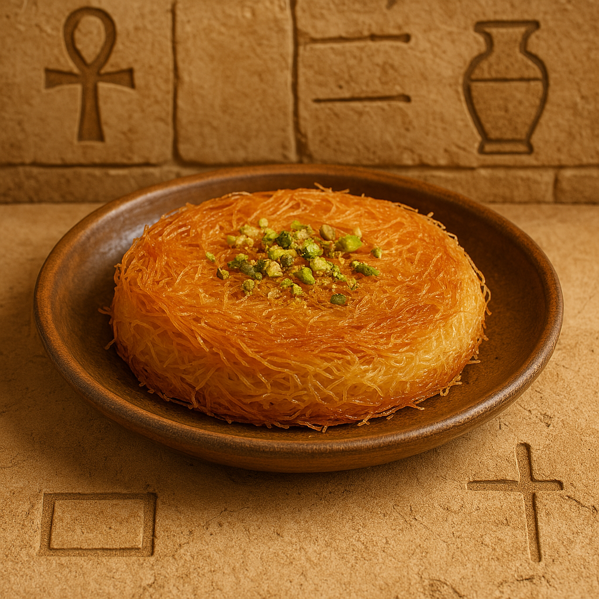

Golden Crunch with Sweet Syrup
Kunafa is a beloved Middle Eastern dessert made with shredded phyllo dough, soaked in sweet syrup and filled with cream, cheese, or nuts. Crispy, golden, and irresistible!
Ingredients:
- 500g kunafa dough (shredded phyllo)
- 200g melted butter or ghee
- 1 cup sugar
- 1 cup water
- 1 tsp lemon juice
- 1 tsp rose water or vanilla
- 1 cup cream, sweet cheese, or nuts (for filling)
Instructions:
- Mix shredded dough with melted butter until fully coated.
- Press half of it into a greased pan.
- Add filling (cream, cheese, or nuts), then top with remaining dough.
- Bake at 180°C (350°F) for 30–40 minutes until golden.
- Meanwhile, make syrup: boil sugar, water, lemon juice for 10 minutes, add rose water at the end.
- Pour cool syrup over hot kunafa. Serve warm!